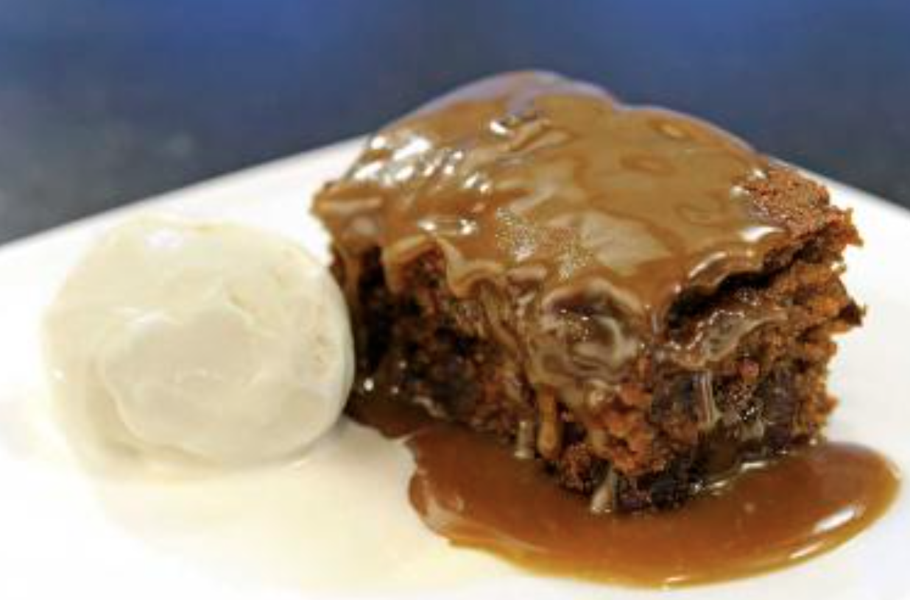

Sticky Toffee Pudding

Ingredients
- 1/4 cups flour
- 1/2 cups chopped dates
- 1/2 cup whole milk
- 1 teaspoon baking powder
- 1 large egg
- 1/2 cup dark brown sugar
- 3 Tbsp unsalted butter
- teaspoon vanilla extract
For the sauce:
- 1 cup dark brown sugar
- 2 Tbsp of unsalted butter
- 2 cups boiling water
Steps
- Preheat the oven to 190°C and butter a 1 1/2 litre / 6 cups capacity pudding dish.
- Combine the 1/2 cup of dark brown sugar with the flour in a large bowl. Add the baking powder to the mixture.
- Pour milk into a measuring jug, beat in the egg, vanilla and melted butter and then pour this mixture over the sugar and flour and stir it with a wooden spoon to combine. Fold in the dates and pour into the prepared pudding dish.
- Set the timer for 45 minutes. Check the top pudding. If it feel spongy and spring back when touched it is done.
- If it's not done in 45 minutes, keep it in the oven for 5 to 10 extra minutes.
- For the sauce: Put the 1 cup of dark brown sugar in a bowl and dot it with butter. Over this pour 2 cups of boiling water and put it the oven for 10-15 minutes to thicken it slightly.
- Pour sauce over the cake once ready and allow it to soak in.
- Serve at room temperature with vanilla ice cream or double cream if you prefer.